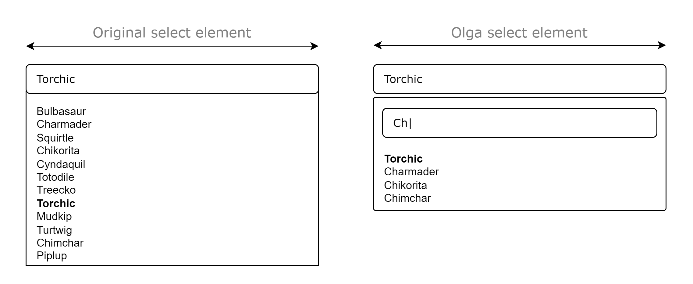

Olga Select
Searchable, Sortable, Updatable
and use your own CSS style 😎
A small Vanilla JavaScript library for enhanced native select elements.

Usage
1. Download and install the library
npm i olga-select2. Include the library
<script src="path/to/olga-select.js"></script>3. Include CSS style
<link rel="stylesheet" href="path/to/olga-select.css">4. Use OlgaSelect function
new OlgaSelect(document.getElementById("your_select"));🖐️ Bye default select element
💪 Welcome Olga select element
Olga select includes a CSS style applicable with .select.
Options
Default
const options = {
placeholder: "Select an option",
selectedplaceholder: "selected",
searchplaceholder: "Search",
config: {
updatable: false,
sortable: false,
searchable: false,
},
classes: {
select: ["dselect"],
dropdown: ["modal"],
search: ["search"]
}
};Placeholders
You can change three placeholders.
| Attribute | Default | Desc. |
|---|---|---|
| placeholder | "Select an option" | Placeholder for a select element with multiple attribute. |
| selectedplaceholder | <qty> "selected" | Placeholder for a select element with multiple attribute when multiple options are selected (only the "selected" string can be changed). |
| searchplaceholder | "Search" | Input element placeholder to search for options. |
let options = {placeholder: "New placeholder", selectedplaceholder: "options", searchplaceholder: "John Doe"};
new OlgaSelect(document.getElementById("your_select"), options);Try it :
Searchable
You can add a seach to the select element
let options = {config: {searchable: true}}
new OlgaSelect(document.getElementById("your_select"), options);Sortable
The list of options can be long. To find selected items easily, you can specify sortable: true
let options = {config: {sortable: true}}
new OlgaSelect(document.getElementById("your_select"), options);Updatable
You may need to update the list of options. Use updatable
let options = {config: {updatable: true}}
new OlgaSelect(document.getElementById("your_select"), options);Your own CSS
Olga Select doesn't want to impose a CSS style. You can therefore use your own classes.
Example with Bootstrap 5 :
const options = {
classes: {
select: ["form-select"],
dropdown: ["bg-white", "border", "border-secondary"],
search: ["form-control"]
}
};